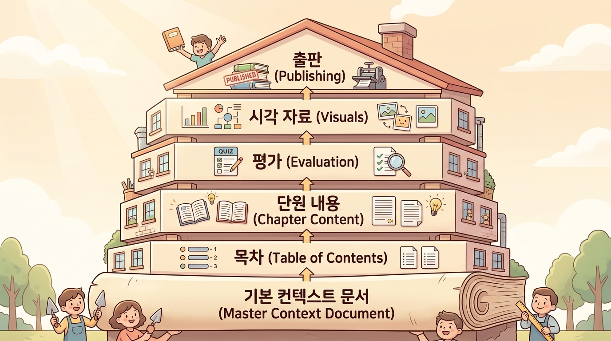

Step 1 · 방향성 논의 — AI와 대화하며 교재 방향 잡기¶
이 챕터에서 배울 것¶
- AI에게 교재의 목적·대상·특징을 자연어로 설명하는 방법을 익힙니다.
- 참고자료(PDF, HWP 등)를 업로드하면 AI의 이해도가 어떻게 달라지는지 체험합니다.
- 대화가 끝난 뒤 자동 생성되는 마스터 컨텍스트의 역할을 이해합니다.
- 실제로 AI와 3~5회 대화를 주고받으며 자신의 교재 방향 문서를 완성합니다.
도입 — "대충 이런 거 만들고 싶은데…"¶
지난 챕터에서 우리는 "교사는 창작자, AI는 도구"라는 원칙을 확인했습니다. 이제 그 도구를 처음 꺼내 들 시간입니다.
그런데 한 가지 문제가 있습니다. 머릿속에 있는 교재의 모습이 아직 안개 같다는 점입니다.
"중학교 2학년 과학인데… 실험 중심으로 하고 싶고… 학생들이 재미있어 했으면 좋겠고…"
이 정도면 충분합니다. 처음부터 완벽한 기획서를 쓸 필요가 없습니다. 에듀플로의 Step 1은 바로 이 안개 같은 생각을 AI와의 대화를 통해 선명하게 만드는 단계입니다.
커피숍에서 동료 교사에게 "나 이런 교재 만들고 싶은데…"라고 이야기하듯, AI에게 편하게 말을 걸면 됩니다. AI는 고개를 끄덕이는 대신, 질문을 던지며 선생님의 생각을 구체적으로 끌어냅니다.
본문¶
1. 방향성 논의란 무엇인가¶
에듀플로의 8단계 워크플로우 중 Step 1은 방향성 논의입니다. 말 그대로, 교재가 나아갈 방향을 AI와 함께 정하는 단계입니다.
건축에 비유하면 이해가 쉽습니다. 집을 짓기 전에 건축가와 의뢰인이 만나서 "어떤 집을 원하세요?"라고 이야기를 나누는 과정과 같습니다. "방 세 개, 남향, 마당 있는 집이요"라고 말하면, 건축가는 "가족 구성원은 몇 명인가요?", "마당에서 주로 뭘 하실 건가요?"라고 되묻습니다. 이 대화를 통해 막연한 희망이 구체적인 설계 조건으로 바뀝니다.
에듀플로에서도 똑같은 일이 벌어집니다.
핵심은 교사가 말하고, AI가 질문하고, 교사가 다시 답하는 대화의 반복입니다. 이 과정에서 교사 자신도 미처 정리하지 못했던 생각이 자연스럽게 정리됩니다.
2. AI에게 말 거는 법 — 세 가지만 알려주세요¶
AI와 처음 대화를 시작할 때, 무엇부터 말해야 할지 막막할 수 있습니다. 복잡하게 생각하지 않아도 됩니다. 다음 세 가지만 먼저 전달하면 AI가 나머지를 질문으로 채워갑니다.
| 순서 | 알려줄 것 | 예시 |
|---|---|---|
| ① | 누구를 위한 교재인가 | "프로그래밍을 처음 배우는 고등학교 1학년" |
| ② | 무엇을 가르치는가 | "파이썬 기초 문법과 간단한 프로젝트" |
| ③ | 어떤 느낌이면 좋겠는가 | "실습 중심, 매 챕터마다 직접 코드를 써보는 구성" |
이 세 가지는 에듀플로의 4축 템플릿 시스템 중 WHO(학습자), WHAT(교과), HOW(형태)에 해당합니다. 완벽한 문장이 아니어도 괜찮습니다. "~하고 싶어요", "~했으면 좋겠어요" 같은 자연스러운 말투면 충분합니다.
💬 실제 대화 예시: 첫 마디¶
아래는 한 선생님이 에듀플로에서 AI와 나눈 첫 대화입니다.
교사: "중학교 2학년 과학 교재를 만들고 싶어요. 실험 중심으로 가고 싶고, 학생들이 직접 데이터를 기록하고 분석하는 활동이 많았으면 좋겠어요."
이 한 마디에 이미 세 가지 정보가 다 들어 있습니다. - 누구: 중학교 2학년 - 무엇: 과학 - 느낌: 실험 중심, 데이터 기록·분석 활동
AI는 이 정보를 바탕으로 더 구체적인 질문을 던집니다.
AI: "과학의 어떤 단원을 다룰 예정인가요? 예를 들어 '화학 반응의 규칙성' 같은 특정 단원이 있나요, 아니면 여러 단원을 묶어서 만들 건가요?"
이렇게 대화가 이어지면서, 처음에는 "실험 중심 과학 교재"라는 큰 그림이었던 것이 "화학 반응 단원, 6차시, 모둠 실험 4회 포함"처럼 점점 선명해집니다.
3. 대화를 깊게 만드는 팁¶
첫 마디를 던진 뒤, AI가 질문을 해옵니다. 이때 어떻게 답하느냐에 따라 교재의 방향이 크게 달라집니다. 다음 세 가지 팁을 기억하면 대화의 질이 확 올라갑니다.
팁 ① 구체적인 숫자를 말하세요¶
| 모호한 답변 | 구체적인 답변 |
|---|---|
| "적당한 분량이면 돼요" | "10챕터, 챕터당 A4 3~4장 정도요" |
| "중간 난이도요" | "교과서 70%, 심화 30% 비율이요" |
| "가끔 퀴즈를 넣고 싶어요" | "챕터마다 끝에 자기 점검 문제 3개씩이요" |
팁 ② "~하지 않았으면 좋겠다"도 중요합니다¶
원하는 것만큼, 원하지 않는 것도 방향을 잡는 데 큰 도움이 됩니다.
"이론 설명이 너무 길어지는 건 원하지 않아요. 학생들이 2페이지 이상 읽기만 하면 집중력이 떨어지거든요."
이런 한 마디가 교재의 문장 길이, 시각자료 배치, 활동 빈도를 결정짓습니다.
팁 ③ 수업 경험을 공유하세요¶
선생님이 가진 가장 강력한 무기는 수업 현장 경험입니다. AI가 아무리 똑똑해도 "작년에 이 단원에서 학생들이 뭘 어려워했는지"는 모릅니다.
"작년에 산화·환원 실험을 했는데, 학생들이 실험 결과를 표로 정리하는 걸 유난히 어려워했어요. 그래서 표 작성 가이드를 넣고 싶어요."
이런 정보를 AI에게 전달하면, AI는 "데이터 기록" 섹션에 표 작성 예시를 자동으로 포함하게 됩니다. 교사의 암묵적 지식(오랜 경험에서 나오는 직관)이 교재에 녹아드는 순간입니다.
4. 참고자료 업로드 — AI의 이해도를 한 단계 끌어올리기¶
대화만으로도 방향을 잡을 수 있지만, 참고자료를 업로드하면 AI의 이해도가 완전히 달라집니다.
레스토랑에서 "매운 파스타 만들어주세요"라고 말하는 것과, 좋아하는 파스타 사진과 레시피를 보여주며 "이런 느낌이에요"라고 말하는 것의 차이를 떠올려 보세요. 후자가 훨씬 정확한 결과를 가져옵니다.
어떤 자료를 업로드할 수 있나요?¶
| 자료 유형 | 예시 | AI가 얻는 정보 |
|---|---|---|
| 기존 학습지 (HWP, DOCX) | 작년에 만든 단원 정리 학습지 | 선생님의 설명 스타일, 문제 유형 |
| 교육과정 문서 (PDF) | 2022 개정 교육과정 성취기준 | 다루어야 할 내용 범위 |
| 수업 계획서 | 이번 학기 수업 진도표 | 차시별 목표와 시간 배분 |
| 참고 교재 (PDF) | 마음에 드는 교재의 일부 | 원하는 구성과 톤 |
| 학생 피드백 | 수업 만족도 조사 결과 | 학생의 어려움과 선호 |
업로드 전후, 이렇게 달라집니다¶
참고자료를 업로드하면 AI가 단순히 "실험 중심 교재"가 아니라, 선생님이 평소 수업에서 사용하는 용어, 설명 방식, 문제 출제 스타일까지 파악합니다. 그래서 제안하는 방향이 훨씬 구체적이고, 선생님의 교육 철학에 가까워집니다.
업로드할 때 한 마디 덧붙이기¶
파일만 올리는 것보다, 왜 이 자료를 올리는지 한 마디 설명을 더하면 효과가 큽니다.
"이건 작년에 제가 만든 학습지인데, 이 중에서 실험 보고서 양식은 마음에 들어요. 그런데 이론 설명 부분이 너무 길어서 학생들이 안 읽더라고요. 이번에는 이론 부분을 줄이고 싶어요."
이렇게 하면 AI는 참고자료에서 살릴 부분과 바꿀 부분을 정확히 구분합니다.
5. 대화의 흐름 — 3~5회면 충분합니다¶
"대화를 몇 번이나 해야 하나요?"라는 질문을 많이 받습니다. 보통 3~5회 주고받기면 교재의 큰 방향이 잡힙니다. 너무 적으면 방향이 모호하고, 너무 많으면 오히려 핵심이 흐려질 수 있습니다.
아래는 전형적인 대화 흐름입니다.
각 단계의 역할을 정리하면 이렇습니다.
| 대화 회차 | 교사의 역할 | AI의 역할 |
|---|---|---|
| 1회 | 큰 그림 전달 (WHO, WHAT, HOW) | 경청하고 핵심 파악 |
| 2회 | AI 질문에 상세 답변 | 빠진 부분을 질문으로 채움 |
| 3회 | 참고자료 업로드 + 맥락 설명 | 자료를 분석하고 반영 |
| 4회 | AI 요약에 수정·보충 | 지금까지 대화를 정리해서 보여줌 |
| 5회 | 최종 확인 "이대로 가겠습니다" | 마스터 컨텍스트 생성 |
물론 대화 횟수는 유연하게 조절할 수 있습니다. 방향이 명확한 경우 3회로 끝나기도 하고, 복잡한 교재라면 7~8회까지 이어지기도 합니다. 중요한 것은 횟수가 아니라, "이 방향이면 되겠다"라는 확신이 드는 순간입니다.
6. 마스터 컨텍스트 — 모든 것의 출발점¶
대화가 마무리되면, AI가 지금까지 나눈 대화를 자동으로 정리하여 마스터 컨텍스트(Master Context)라는 문서를 생성합니다.
마스터 컨텍스트란, 교재의 목적·대상·범위·톤·특징 등을 한 곳에 정리한 교재 방향 문서입니다. 건축에서의 "설계 요구 사항서"와 같습니다. 이후 Step 2(목차 작성)부터 Step 7(배포)까지, 모든 단계가 이 문서를 기초로 진행됩니다.
마스터 컨텍스트에 담기는 내용¶
아래는 실제로 생성되는 마스터 컨텍스트의 구조 예시입니다.
📄 마스터 컨텍스트 예시
항목 내용 교재 제목(안) 파이썬 첫걸음 — 코드로 만드는 나만의 게임 대상 학습자 고등학교 1학년, 프로그래밍 경험 없음 교과/주제 정보 교과 — 파이썬 프로그래밍 기초 교재 형태 워크숍(실습 중심), 이론 30% : 실습 70% 분량 16차시(8챕터), 챕터당 A4 3~4장 핵심 특징 매 챕터 코딩 실습 포함, 마지막 4차시 미니 게임 프로젝트 톤앤매너 친근한 설명, 유머 가미, 실패를 격려하는 분위기 참고자료 작년 수업 자료 3건 업로드 반영 피하고 싶은 것 긴 이론 설명, 암기 위주 문제, 영어 원문 그대로 사용
왜 마스터 컨텍스트가 중요한가¶
마스터 컨텍스트가 없다면 어떻게 될까요? 목차를 만들 때, 본문을 생성할 때, 평가를 할 때마다 "이 교재가 누구를 위한 건지, 어떤 톤인지"를 매번 다시 설명해야 합니다. 마치 설계도 없이 벽돌을 쌓는 것과 같습니다.
마스터 컨텍스트가 있으면, 이후 모든 단계에서 AI가 자동으로 이 문서를 참조합니다. "고1 대상이니 문장을 25자 이내로", "실습 중심이니 코드 블록을 챕터당 2개 이상" 같은 판단을 AI가 스스로 해줍니다.

7. 실전에서 자주 나오는 질문들¶
방향성 논의를 처음 해보면 몇 가지 궁금증이 생깁니다. 가장 자주 나오는 질문들을 미리 정리했습니다.
Q. "처음에 뭐라고 말해야 할지 모르겠어요. 그냥 '수학 교재 만들고 싶어요'라고만 해도 되나요?"
네, 그것만으로 충분히 시작할 수 있습니다. AI가 "어떤 학년인가요?", "어떤 단원인가요?", "어떤 형태로 만들고 싶은가요?" 같은 질문을 던지며 대화를 이끌어갑니다. 완벽한 기획서를 미리 준비할 필요가 없습니다.
Q. "참고자료가 없으면 방향성 논의를 할 수 없나요?"
참고자료 없이도 할 수 있습니다. 다만 자료가 있으면 AI의 제안이 훨씬 구체적이고, 선생님의 기존 수업 스타일에 가까워집니다. 처음에는 자료 없이 시작하고, 대화 도중에 "아, 이 자료 올려볼게요"라고 추가해도 괜찮습니다.
Q. "대화 중에 방향을 바꿔도 되나요?"
물론입니다. "아까는 실습 중심이라고 했는데, 생각해보니 이론과 실습을 반반으로 하고 싶어요"라고 말하면 AI가 바로 반영합니다. 방향성 논의 단계는 바로 이런 시행착오를 위해 존재합니다. 본문을 다 쓴 뒤에 방향을 바꾸면 비용이 크지만, 이 단계에서는 자유롭게 바꿀 수 있습니다.
Q. "마스터 컨텍스트가 마음에 안 들면요?"
수정할 수 있습니다. 마스터 컨텍스트는 AI가 대화를 요약한 것이므로, "여기서 톤 부분을 좀 더 격식 있게 바꿔주세요" 같은 피드백을 주면 바로 수정됩니다. 다음 단계로 넘어가기 전에 꼭 한 번 읽어보고 확인하는 것을 권합니다.
실습 — 나만의 교재 방향 잡아보기¶
지금까지 배운 내용을 직접 실습해 봅시다. 에듀플로에 접속하여 AI와 대화를 나누며, 선생님만의 교재 방향 문서를 완성하는 것이 목표입니다.
실습 준비¶
- 에듀플로(eduflow)에 로그인합니다 (이전 챕터에서 가입 완료).
- 새 프로젝트를 생성합니다.
- 업로드할 참고자료가 있다면 미리 파일을 준비해 둡니다 (없어도 괜찮습니다).
실습 단계¶
1단계: 첫 마디 던지기 (1분)
프로젝트의 "방향성 논의" 화면에서 아래 세 가지를 포함하여 AI에게 첫 메시지를 보냅니다.
✅ 체크리스트 - [ ] 누구를 위한 교재인지 말했나요? - [ ] 무엇을 가르치는 교재인지 말했나요? - [ ] 어떤 느낌이면 좋겠는지 말했나요?
2단계: AI 질문에 답하기 (5분)
AI가 구체화 질문을 던지면, 본문에서 배운 세 가지 팁을 떠올리며 답합니다.
- 구체적인 숫자 사용하기
- 원하지 않는 것도 말하기
- 수업 경험 공유하기
3단계: 참고자료 업로드하기 (2분)
대화 중간에 참고자료를 업로드합니다. 파일과 함께 "이 자료에서 ~는 살리고, ~는 바꾸고 싶어요"라고 한 마디 덧붙여 봅니다.
💡 참고자료가 없다면 이 단계를 건너뛰어도 됩니다. 대화만으로도 충분히 방향을 잡을 수 있습니다.
4단계: 마스터 컨텍스트 확인하기 (2분)
3~5회 대화가 끝나면, AI가 생성한 마스터 컨텍스트를 확인합니다. 아래 항목이 모두 포함되어 있는지 점검합니다.
✅ 마스터 컨텍스트 점검 체크리스트 - [ ] 대상 학습자가 명확하게 적혀 있나요? - [ ] 교과/주제 범위가 구체적인가요? - [ ] 교재의 형태(실습 중심, 이론 중심 등)가 드러나나요? - [ ] 선생님의 수업 경험이 반영되어 있나요? - [ ] 피하고 싶은 것이 기록되어 있나요?
마음에 들지 않는 부분이 있다면 AI에게 수정을 요청합니다. 이 문서가 이후 모든 단계의 기초가 되므로, 이 단계에서 꼼꼼히 확인하는 것이 중요합니다.
기대 결과¶
실습이 끝나면, 아래와 같은 형태의 마스터 컨텍스트가 완성되어 있어야 합니다.
📄 나의 교재 방향 문서 (마스터 컨텍스트)
─────────────────────────────────
• 교재 제목(안): _______________
• 대상 학습자: _______________
• 교과/주제: _______________
• 교재 형태: _______________
• 예상 분량: _______________
• 핵심 특징: _______________
• 톤앤매너: _______________
• 참고자료: _______________
• 피하고 싶은 것: _______________
정리¶
이번 챕터의 핵심을 세 줄로 요약합니다.
- AI에게 '누구에게, 무엇을, 어떻게'를 자연어로 말하면 방향성 논의가 시작됩니다. 완벽한 기획서는 필요 없습니다.
- 참고자료를 업로드하면 AI가 선생님의 설명 스타일과 수업 맥락을 파악하여 훨씬 구체적인 방향을 제안합니다.
- 대화가 끝나면 자동 생성되는 마스터 컨텍스트가 이후 모든 단계(목차, 본문, 평가, 배포)의 기초가 됩니다.
성찰 질문¶
실습을 마치고, 잠시 아래 질문을 떠올려 보세요.
- AI와 대화하면서 "아, 내가 이런 교재를 원했구나"라고 새롭게 깨달은 점이 있었나요?
- 참고자료를 업로드하기 전과 후, AI의 반응이 어떻게 달라졌나요?
- 마스터 컨텍스트에서 수정하고 싶은 부분이 있었다면, 어떤 부분이었나요?
다음 챕터 미리보기¶
마스터 컨텍스트가 완성되었으니, 이제 안개가 걷히고 윤곽이 보이기 시작합니다. 다음 챕터 Step 2 · 목차 작성에서는 AI가 이 방향 문서를 바탕으로 Part > Chapter 구조의 목차를 자동 생성합니다. 교재의 뼈대를 세우는 과정을 함께 경험해 봅시다.
확인 문제¶
아래 문제를 풀며 이번 챕터의 핵심 내용을 점검해 보세요.
1. 에듀플로 Step 1에서 AI에게 처음 전달해야 하는 세 가지 정보는 무엇인가요?
정답 확인
① 누구를 위한 교재인가 (대상 학습자) ② 무엇을 가르치는가 (교과/주제) ③ 어떤 느낌이면 좋겠는가 (교재 형태) 이 세 가지는 에듀플로 4축 템플릿의 WHO, WHAT, HOW에 해당합니다.2. 참고자료를 업로드할 때, 파일만 올리는 것보다 효과적인 방법은 무엇인가요?
정답 확인
파일과 함께 **왜 이 자료를 올리는지, 어떤 부분을 살리고 어떤 부분을 바꾸고 싶은지** 한 마디 설명을 덧붙이는 것입니다. 이렇게 하면 AI가 참고자료에서 반영할 부분과 개선할 부분을 정확히 구분합니다.3. 마스터 컨텍스트가 중요한 이유를 한 문장으로 설명해 보세요.
정답 확인
마스터 컨텍스트는 이후 목차 작성, 본문 생성, 교육 평가, 배포 등 **모든 단계에서 AI가 참조하는 기초 문서**이기 때문입니다. 설계도 없이 집을 지을 수 없는 것처럼, 이 문서 없이는 일관된 교재를 만들기 어렵습니다.4. 다음 중 방향성 논의에서 AI에게 전달하면 도움이 되는 정보가 아닌 것은?
- (가) "작년에 학생들이 이 단원에서 분수 계산을 어려워했어요"
- (나) "챕터당 A4 3장 정도 분량이요"
- (다) "AI가 알아서 잘 판단해 주세요"
- (라) "긴 이론 설명은 피하고 싶어요"
정답 확인
**(다)**입니다. "AI가 알아서"라는 말은 방향을 정하는 데 아무런 정보를 주지 않습니다. 교사가 구체적인 정보를 전달할수록 AI의 제안이 정확해집니다. 나머지는 모두 수업 경험(가), 구체적 숫자(나), 원하지 않는 것(라)에 해당하는 유용한 정보입니다.5. 방향성 논의에서 대화를 보통 몇 회 정도 주고받으면 교재의 큰 방향이 잡히나요?